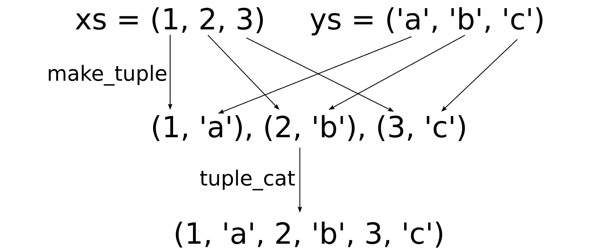
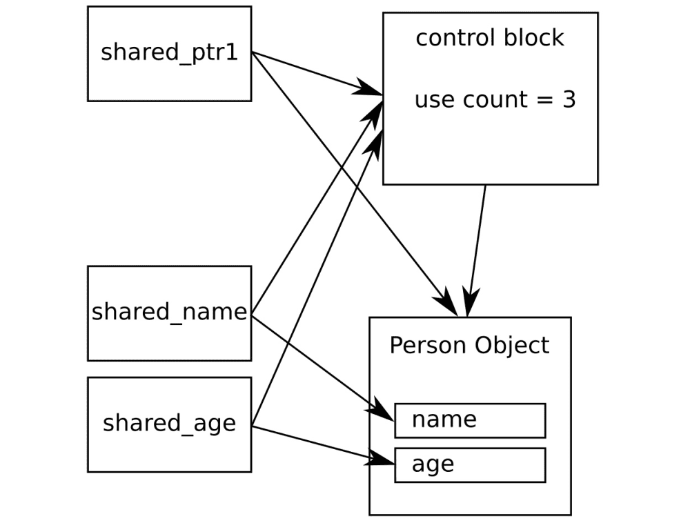

《C++17 STL Cookbook》读书笔记（第 8-10 章）
还是继续接上篇。
Chapter 8: Utility Classes
使用 std::ratio 转换不同的时间单位
- 几种不同类型的时钟对象：
- std::chrono::system_clock：表示系统级别的实时挂钟。想要获取本地时间的话，这是个正确的选择；
- std::chrono::steady_clock：表示单调型的时间。这个时间是不可能倒退的，而时间倒退可能会在其他时钟上发生，比如：其最小精度不同，或是在冬令时和夏令时交替时发生；
- std::chrono::high_resolution_clock：STL 中可统计最细粒度时钟周期的时钟；
- std::chrono::duration 结构：
template< class Rep, class Period = std::ratio<1> > class duration;- Rep 为一个数值类型，用来保存某时间点的值（默认为
long long int）。 - Period 为比例参数，默认情况下为 std::ratio<1>，即 1。
- Rep 为一个数值类型，用来保存某时间点的值（默认为
using namespace std;
// "chrono::duration" represents a time interval.
using seconds = chrono::duration<double>;
using milliseconds = chrono::duration<double, ratio_multiply<seconds::period, milli>>;
using microseconds = chrono::duration<double, ratio_multiply<seconds::period, micro>>;
// get user input.
static pair<string, seconds> getInput() {
string s;
// save the current time point.
const auto tic (chrono::steady_clock::now());
if (!(cin >> s)) {
return {{}, {}};
}
const auto toc (chrono::steady_clock::now());
return {s, toc - tic};
}
int main(int argc, char **argv) {
while (true) {
cout << "Please type the word \"C++17\" as fast as you can.\n> ";
const auto [userInput, diff] = getInput();
if (userInput == "") { break; }
if (userInput == "C++17") {
cout << "Bravo. You did it in:\n"
<< fixed << setprecision(2)
<< setw(12) << diff.count()
<< " seconds.\n"
<< setw(12) << milliseconds(diff).count()
<< " milliseconds.\n"
<< setw(12) << microseconds(diff).count()
<< " microseconds.\n";
break;
} else {
cout << "Sorry, your input does not match. You may try again.\n";
}
}
return 0;
}- std::ratio_multiply 用于将两个 std::ratio 相乘（如：2/3 * 1/6 = 1/9）。
typedef ratio<1LL, 1000000LL> micro; typedef ratio<1LL, 1000LL> milli;- std::chrono::duration::period：std::__1::ratio<1L>。
使用 std::chrono 转换绝对时间与相对时间
- 常用的实际偏移字面量值（std::chrono::duration）：
- hours (h)；
- minutes (min)；
- seconds (s)；
- milliseconds (ms)；
- microseconds (us)；
- nanoseconds (ns)；
- std::time：表示时间的算数类型，通常为一个整型。该值包含自 1970/01/01 UTC 的 00:00 开始的秒数。
using namespace std;
using namespace chrono_literals;
ostream& operator<<(ostream& os, const chrono::time_point<chrono::system_clock>& t) {
// "chrono::time_point<chrono::system_clock>" -> "std::time_t".
const auto tt (chrono::system_clock::to_time_t(t));
// convert to local time.
const auto loct (std::localtime(&tt));
// "%c" stands for standard date formatting string.
return os << put_time(loct, "%c");
}
// add time offset.
using days = chrono::duration<
chrono::hours::rep,
ratio_multiply<chrono::hours::period, ratio<24>>>;
constexpr days operator ""_days(unsigned long long d) {
return days{d};
}
int main(int argc, char **argv) {
auto now (chrono::system_clock::now());
cout << "The current date and time is " << now << '\n';
chrono::hours chrono_12h {12};
cout << "In 12 hours, it will be " << (now + chrono_12h)<< '\n';
cout << "12 hours and 15 minutes ago, it was "
<< (now - 12h - 15min) << '\n'
<< "1 week ago, it was "
<< (now - 7_days) << '\n';
return 0;
}使用 std::optional 安全地标识失败
- std::optional::value_or：可以设置 std::optional 的默认值；
- 当访问没有值的 std::optional 时会抛出 std::logic_error 异常；
using oint = std::optional<int>;
oint readInt() {
int i;
if (std::cin >> i) { return {i}; }
return {};
}
oint operator+(oint x, oint y) {
// if optional x and y have value?
if (!x || !y) { return {}; }
return {*x + *y};
}
oint operator+(oint x, int y) {
if (!x) { return {}; }
return {*x + y};
}
int main(int argc, char **argv) {
std::cout << "Please enter 2 integers.\n> ";
auto x { readInt() };
auto y { readInt() };
auto sum(x + y + 10);
if (sum) {
std::cout << *sum << '\n';
} else {
std::cout << "sorry, the input was something else than 2 numbers.\n";
}
return 0;
}std::tuple 的打包与解包
- std::apply：用一个 std::tuple 作为参数来调用 Callable 对象 f（模板参数可自动推导）。
using std::operator""s;
static void printStudent(size_t id, const std::string& name, double gpa) {
std::cout << "Student " << std::quoted(name)
<< ", ID: " << id
<< ", GPA: " << gpa << '\n';
}
int main(int argc, char **argv) {
using student = std::tuple<size_t, std::string, double>;
student john {123, "John Doe"s, 3.7};
const auto& [id, name, gpa] = john;
printStudent(id, name, gpa);
std::cout << "-----\n";
auto argumentsForLater = {
std::make_tuple(234, "John Doe"s, 3.7),
std::make_tuple(345, "Billy Foo"s, 4.0),
std::make_tuple(456, "Cathy Bar"s, 3.5),
};
for (const auto& [id, name, gpa] : argumentsForLater) {
printStudent(id, name, gpa);
}
std::cout << "-----\n";
/**
* // invoke the Callable object f with a tuple of arguments.
* template <class F, class Tuple>
* constexpr decltype(auto) apply(F&& f, Tuple&& t);
*/
std::apply(printStudent, john);
std::cout << "-----\n";
return 0;
}使用 std::tuple 快速构建数据结构
- std::make_tuple 与 std::tuple_cat 相结合构建 zip 函数：

template<typename T, typename ...Ts>
void printArgs(std::ostream& os, const T& v, const Ts& ...vs) {
os << v;
(void) std::initializer_list<int>{((os << ", " << vs), 0)...};
}
template<typename ...Ts>
std::ostream& operator<<(std::ostream& os, const std::tuple<Ts...>& t) {
auto printToOs ([&os](const auto &...xs) {
printArgs(os, xs...);
});
os << "(";
std::apply(printToOs, t);
return os << ")";
}
template<typename T>
std::tuple<double, double, double, double> sumMinMaxAvg(const T &range) {
auto minMax (std::minmax_element(std::begin(range), std::end(range)));
auto sum (std::accumulate(std::begin(range), std::end(range), 0.0));
return {sum, *minMax.first, *minMax.second, sum / range.size()};
}
template <typename T1, typename T2>
static auto zip(const T1 &a, const T2 &b) {
auto z ([](auto ...xs) {
return [xs...](auto ...ys) {
return std::tuple_cat(std::make_tuple(xs, ys) ...);
};
});
return std::apply(std::apply(z, a), b);
}
int main(int argc, char **argv) {
auto studentDesc (std::make_tuple("ID", "Name", "GPA"));
auto student (std::make_tuple(123456, "John Doe", 3.7));
std::cout << studentDesc << '\n'
<< student << '\n';
std::cout << std::tuple_cat(studentDesc, student) << '\n';
auto zipped (zip(studentDesc, student));
std::cout << zipped << '\n';
auto numbers = {0.0, 1.0, 2.0, 3.0, 4.0};
std::cout << zip(
std::make_tuple("Sum", "Minimum", "Maximum", "Average"),
sumMinMaxAvg(numbers)) << '\n';
return 0;
}将 void* 替换为更为安全的 std::any
- std::any 对象有一个 has_value() 方法，可以返回该 any 是否携带一个值；
- std::any_cast
(x) 会返回 x 中 T 值的副本；如需避免拷贝，可返回引用类型 std::any_cast<T&>(x)； - 如果 any 被转换成为一种错误的类型，则会抛出 std::bad_any_cast 异常；
using std::operator""s;
using intList = std::list<int>;
void printAnything(const std::any& a) {
if (!a.has_value()) {
std::cout << "Nothing.\n";
} else if (a.type() == typeid(std::string)) {
std::cout << "It's a string: "
<< std::quoted(std::any_cast<const std::string&>(a)) << '\n';
} else if (a.type() == typeid(int)) {
std::cout << "It's an integer: "
<< std::any_cast<int>(a) << '\n';
} else if (a.type() == typeid(intList)) {
const auto &l (std::any_cast<const intList&>(a));
std::cout << "It's a list: ";
std::copy(
std::begin(l),
std::end(l),
std::ostream_iterator<int>{std::cout, ", "});
std::cout << '\n';
} else {
std::cout << "Can't handle this item.\n";
}
}
int main(int argc, char **argv) {
printAnything({});
printAnything("Hello, world!"s);
printAnything(100);
printAnything(intList{1, 2, 3});
// in-place construct.
printAnything(std::any(std::in_place_type_t<intList>{}, {1, 2, 3}));
return 0;
}使用 std::variant 存储不同数据类型
- 三种成员遍历方式：
- std::get；
- std::get_if；
- std::visit；
class Cat {
std::string name;
public:
Cat(std::string n) : name{n} {}
void meow() const {
std::cout << name << " says Meow!\n";
}
};
class Dog {
std::string name;
public:
Dog(std::string n) : name{n} {}
void woof() const {
std::cout << name << " says Woof!\n";
}
};
using Animal = std::variant<Dog, Cat>;
template <typename T>
bool is_type(const Animal& a) {
return std::holds_alternative<T>(a);
}
struct AnimalVoice {
void operator()(const Dog& d) const { d.woof(); }
void operator()(const Cat& c) const { c.meow(); }
};
int main(int argc, char **argv) {
std::list<Animal> l {Cat{"Tuba"}, Dog{"Balou"}, Cat{"Bobby"}};
// std::get.
for (const Animal& a : l) {
switch (a.index()) {
case 0:
std::get<Dog>(a).woof();
break;
case 1:
std::get<Cat>(a).meow();
break;
}
}
std::cout << "-----\n";
// std::get_if.
for (const Animal& a : l) {
if (const auto d (std::get_if<Dog>(&a)); d) {
d->woof();
} else if (const auto c (std::get_if<Cat>(&a)); c) {
c->meow();
}
}
std::cout << "-----\n";
// std::visit.
for (const Animal& a : l) {
std::visit(AnimalVoice{}, a);
}
std::cout << "-----\n";
std::cout << "There are "
<< std::count_if(std::begin(l), std::end(l), is_type<Cat>)
<< " cats and "
<< std::count_if(std::begin(l), std::end(l), is_type<Dog>)
<< " dogs in the list.\n";
return 0;
}自动化管理资源 — std::unique_ptr
struct Foo {
std::string name;
Foo(std::string n) : name{n} { std::cout << "CTOR " << name << '\n'; }
~Foo() { std::cout << "DTOR " << name << '\n'; }
};
void processItem(std::unique_ptr<Foo> p) {
if (!p) return;
std::cout << "Processing " << p->name << '\n';
}
int main(int argc, char **argv) {
{
std::unique_ptr<Foo> pA {new Foo{"foo"}};
auto pB (std::make_unique<Foo>("bar"));
}
processItem(std::make_unique<Foo>("fooA"));
auto pA (std::make_unique<Foo>("fooB"));
// transfer ownership, old "std::unique_ptr" will be destructed.
pA = std::make_unique<Foo>("fooC");
processItem(move(pA));
// destructed "std::unique_ptr" will be nullptr.
if (pA == nullptr) {
std::cout << "End of main()\n";
}
return 0;
}处理共享堆内存 — std::shared_ptr
（略）
对共享对象使用弱指针
（略）
使用智能指针简化处理遗留 API
- 为 std::shared_ptr 指定自定义 deleter 时不需要修改 std::shared_ptr 的类型（std::unique_ptr 则需要修改模板参数，因此会改变其类型）。原因是 std::shared_ptr 对象会在其控制块内动态地处理自定义 deleter 相关的逻辑；
共享同一对象的不同成员
- std::shared_ptr 可以指向另外一个由 std::shared_ptr 管理的共享对象的一部分成员。但两个指针会共享同样的控制块（引用计数会增加）。因此当指向共享对象的指针析构后。指向其成员的 std::shared_ptr 仍然存活；

struct Person {
std::string name;
size_t age;
Person(std::string n, size_t age) : name{std::move(n)}, age(age) {
std::cout << "CTOR " << name << '\n';
}
~Person() {
std::cout << "DTOR " << name << '\n';
}
};
int main(int argc, char **argv) {
std::shared_ptr<std::string> sharedName;
std::shared_ptr<size_t> sharedAge;
{
auto sperson (std::make_shared<Person>("John Doe", 30));
sharedName = std::shared_ptr<std::string>(sperson, &sperson->name);
sharedAge = std::shared_ptr<size_t>(sperson, &sperson->age);
}
std::cout << "name: " << *sharedName
<< "\nage: " << *sharedAge << '\n';
return 0;
}选择合适的引擎生成随机数
（略）
让 STL 以指定分布方式产生随机数
（略）
Chapter 9: Parallelism and Concurrency
- C++17 的一个重要的扩展，是对标准函数的执行策略进行了修改。69个标准算法都能并行到不同的核上运行，甚至是向量化。
- Clang++ 暂未实现 “Standardization of Parallelism TS”。
（略）
Chapter 10: Filesystem
- 部分特性仅在 macOS 10.15 及以上的系统中可用；
（略）